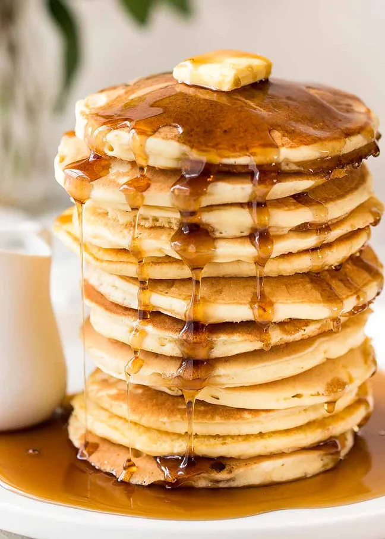

Pancakes

Description
Pancakes are soft, fluffy, and easy to prepare. They are made using a simple mixture of flour, milk, eggs, sugar, and baking powder. They are commonly served for breakfast with syrup or butter.
Ingredients
- 1 cup all-purpose flour
- 2 tablespoons sugar
- 1 teaspoon baking powder
- 1 egg
- 3/4 cup milk
- 2 tablespoons melted butter
- A pinch of salt
Steps
- Combine the flour, sugar, baking powder, and salt in a bowl.
- In another bowl, mix the egg, milk, and melted butter.
- Combine the wet and dry ingredients until mixed.
- Heat a lightly greased pan over medium heat.
- Pour some batter into the pan.
- Flip the pancake when bubbles appear on its surface.
- Cook the other side until golden brown.
- Serve with butter or syrup.
Home